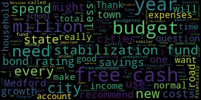

[Callahan]: Councilor Callahan. Thank you. I wanted to take this opportunity to answer a question that has come up pretty often in these chambers, and that really is a question about why we can't use free cash. People say that they heard that we have $34 million in free cash, and why can't we use that instead of raising taxes, which I think is a very fair question. And I would like people to consider the way that city budgets and city finances are similar to household finances. When you run a household, you've got income, you've got expenses. If you make your operating budget, your normal budget for the year, you want to look at your income and hope that your budget adds up to less than your total income. And in your household, you probably also have a savings account. It's good to have a savings account for one time or unexpected expenses. Your kid might need braces, your roof might need repair, you might need to get a new car. Cities also need to have savings accounts for similar reasons. At some point, we will need a new fire station. We will need a new high school. There might be a pandemic, and our schools suddenly need HVAC systems to all be replaced at the same time. The short answer to why we should not use free cash for normal budgeted items is that free cash is savings, and we need it to fix things that are getting older, like buildings or firetrucks, or in case some unexpected emergency happens. Now what is free cash exactly? It is really a dumb name because it's not free and it's not cash. Every year the city makes a budget and throughout the year we spend money. If we spend less than we budgeted, that amount left over is called free cash. So if we budget $180 million and then we spend $172 million, that gives us $8 million in free cash. And what's important to understand is that every city is strongly encouraged by the state to have free cash every year. Cities must spend less than their budget. If they spend more than their budget, their bond rating goes down. Bond rating. It's like a credit rating. And if your bond rating goes down, then it costs you an arm and a leg in interest and fees to borrow money. Spending more than you budgeted is a big no-no. It's a sign that your city's being poorly run. So yay for Medford that recently we have free cash every year. This has raised our bond rating up to a double A plus rating in the last few years. The Division of Local Services is a state body that helps cities and towns be financially responsible. It recommends that cities and towns have between three and 5% of their total budget in free cash every year to maintain a good bond rating. And in Medford, that is between 5 million and 9 million each year. Our $34 million in certified free cash is primarily because we had $9 million in 2023 due to remaining ARPA COVID grant funds, $9 million in 2022 because of unfilled state positions and legal funds not being spent. Both of these years are within the recommended 3-5% of our budget. Before about 2012, we had almost no free cash each year, which really is a sign of not being managed, financially managed properly. And the state recommends that municipalities create what are called stabilization funds. Almost every city and town at the start of 2024, all but four cities and towns out of 351 had at least one stabilization fund. We were one of only four that did not. We finally, this year, have created two stabilization funds. And what's important to remember, do not use your savings, free cash or stabilization funds for normal operating expenses. The Division of Local Services says, quote, free cash should be restricted to paying one-time expenditures, funding capital projects, or replenishing other reserves. It recommends that communities adopt a free cash policy that avoids supplementing current year departmental operations. So, We are recommended by the state to have a certain amount of money in our stabilization funds for Medford, it's five to 7%, which is what they recommend would be between nine and $13 million in our stabilization in our general stabilization fund. Just to understand a little bit about what we might use these stabilization funds or free cash for, we do have, according to our payment analysis, $67 million in essentially road debt, because we have not kept our roads up as much as we should have. It costs less. each year if your roads are in good shape, and it costs if your roads are in bad shape. So we need to make sure that we are doing those improvements. And then we also have a capital improvement plan, which has recognized $79 million in needs from about 123 projects across the city. So I just want to be pretty clear that when you look at what we are recommended to do by the state in order to be a financially responsible city, that means that we should continue to create a budget that we know we won't exceed. At the end of each fiscal year, we should have between 3% and 5% of that total budget unspent, which is called free cash. Those funds can move into a stabilization where we can spend them to properly take care of our city, which will allow us to spend less in the future. And of course, we also want to have new growth through more commercial growth and new housing. We already are doing that. The last three years have seen Medford's highest new growth in the past two decades, and we will continue to encourage new growth. Unfortunately, this is a slow process. It cannot fix our budget shortfall. and because of rising costs of schools, insurance, pensions, inflation affecting every department and other costs that we cannot control, we need to increase our annual budget and that means voting yes on the overrides and on the debt exclusion. Thank you. Thank you.
|
total time: 6.27 minutes total words: 1038  |
|||
{kind=link}